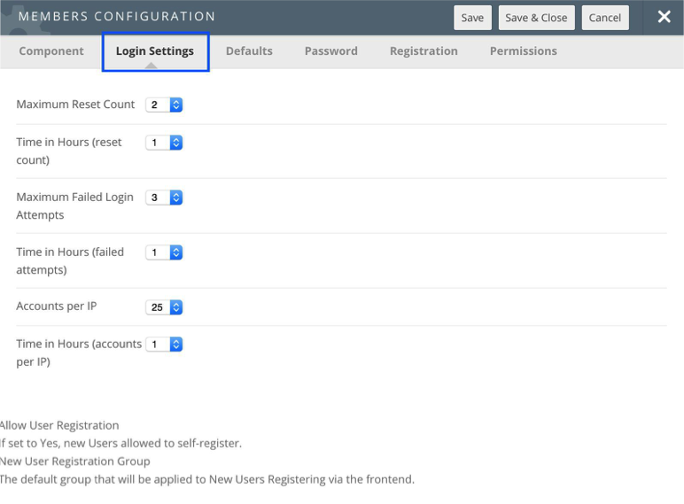
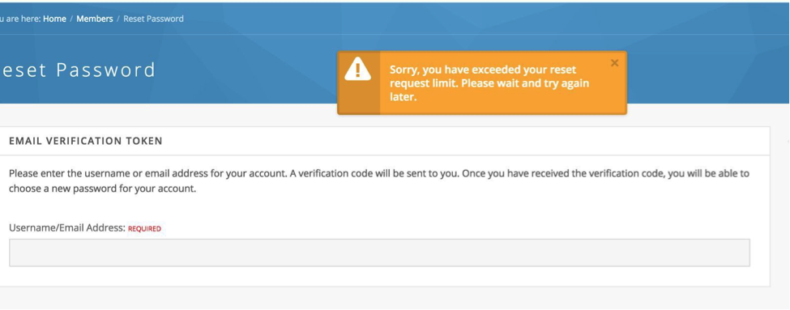
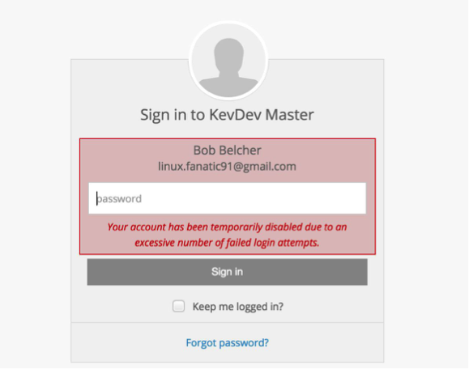

Hub managers
Security considerations
A hub is a public web application on a public server, so its security has two halves. The operating system, the web server, and the services around them are hardened by the system administrator with tools that are not part of this repository. The CMS has its own settings that decide how sessions and cookies behave, how quickly a brute-force attempt is throttled, which response headers the hub sets, and how spam is caught. This section covers both, says plainly which is which, and is equally plain about the screens that look like security controls and are not.
In this section
- Operating system hardening — what the people who run the Purdue hubs do to the host underneath a hub. All of it is external to the CMS.
- Hardening the CMS — the settings and extensions in the administrator interface that affect the hub's own security posture.
- CMS-controlled Fail2Ban jail — how the login thresholds under Users > Members > Options work, and how the CMS hands an address to Fail2Ban.
Spam has its own chapter: Spam.
What the CMS gives you
| Area | Where |
|---|---|
| Force HTTPS | Site > Global Configuration > Server > Force SSL |
| Session lifetime and handler | Site > Global Configuration > System > Session Settings |
| Cookie domain and path | Site > Global Configuration > Site > Cookie Settings |
| What HTML each access group may submit | Site > Global Configuration > Text Filters — but see the warning under Text filters: nothing reads it |
| Failed login and password-reset thresholds | Users > Members > Options > Login Settings |
| Password rules and password blacklist | Users > Members > Passwords |
| Second authentication factors | Extensions > Plug-in Manager, the authfactors group |
| Content-Security-Policy header | Extensions > Plug-in Manager > System - Content Security Policy (ships disabled) |
| Referrer-Policy header | Extensions > Plug-in Manager > System - Referrer Policy (ships enabled) |
| Spam detection | Extensions > Plug-in Manager, the antispam group |
| Upload virus scanning | The virus_scanner key in configuration.php |
Every parameter behind these screens is listed in the generated configuration reference.
Where to start
Nine tenths of what makes a hub hard to attack is the system administrator's work, and none of it is in the administrator interface. If you are the person who inherited the hub and not the person who runs the server, this is the list that is actually yours, cheapest first. Each links to the section that explains it.
- Set Force SSL to Entire Site. On a site it is the only value that marks the session cookie secure, and the shipped value is None. Two minutes, reversible, and nothing else on this page matters as much.
- Choose a session handler. The shipped value
leaves sessions to PHP's own storage.
databaseis the usual choice on a hub and is what makes sessions visible and purgeable. - Do not spend time on Text Filters. The screen looks like the most important one on this list and nothing reads it. Knowing that saves you an afternoon and a false sense of a control you do not have.
- Leave the login thresholds alone unless you have a reason. The shipped values are sensible, and 0 does not mean "no limit" — see the warning there.
- Check that System - Referrer Policy is still on. It ships enabled with a sensible policy, which means the only thing to do is not turn it off. Confirm it, then leave it.
- Then, if you have somewhere to test, work through System - Content Security Policy in report-only mode. That one ships disabled, and it is a project rather than a toggle.
Everything else on the CMS side is a response to something: spam arriving, an account under attack, a member locked out. The security questions below cover those.
Reporting a vulnerability
If you find a vulnerability in the Hubzero release itself, report it to the project rather than filing it in a public tracker.
Security questions
Answers to the questions hub managers ask most often about the CMS side of security. Questions about the host underneath the hub belong in Operating system hardening.
Does an advisory for another content management system apply here?
Usually not, but check each one rather than assuming.
Some naming in this tree is shared with other PHP content management
systems: language keys beginning J, the #__ table-prefix placeholder,
and com_ component directories. The running code is Hubzero's own. The
application object, the request and response objects, the session handler,
the user object, the registration flow, the router, the database layer, and
the plugin and module systems are all in
core/libraries/Hubzero, and the
components under core/components are written
against them.
So an advisory for another project rarely names code a hub actually runs. It also means you cannot dismiss one on the strength of a version number: read what the advisory describes and look for the same pattern here. Hubzero tracks no other project's releases and receives no other project's security patches, so nothing arrives automatically.
Where does the CMS record failed logins?
Two places, and they hold different things.
/var/log/hubzero/cmsauth.log is a text log. Every line is a timestamp in
Y-m-d H:i:s followed by a message, with nothing between them but a space.
System - HUBzero writes the line most people mean by "a failed login".
It is the submitted username (stripped to A-Z 0-9 _ . -, or [unknown]),
the remote address, and the word invalid:
2026-09-09 14:22:31 jdoe 203.0.113.7 invalid
The same plugin writes <username> <address> detect when it recognises its
tracking cookie. System - Log writes a second, differently shaped line
for the same failure — the authentication type, the word FAILURE, and the
plugin's error message, with the username appended in quotes only when its
Log user names parameter is on. It carries no address.
The log directory is /var/log/hubzero when that directory exists, and the
log_path from Site > Global Configuration > System otherwise.
See
LogServiceProvider
for the three loggers the CMS registers: debug (cmsdebug.log), auth
(cmsauth.log), and spam (cmsspam.log). Only the auth logger uses the
bare %datetime% %message% format; the other two use Monolog's default
line format.
The #__users_log_auth database table holds a structured record per attempt, with
username, ip, status and logged columns. The CMS reads that table,
not the text log, when it decides whether an account or an address has
crossed a threshold. See
CMS-controlled Fail2Ban jail.
Does the CMS scan uploads for viruses?
Yes, wherever a component calls Filesystem::isSafe() — support ticket
attachments, group and project files, wiki and blog media, storefront
images, and course media among them. The scan shells out to the command in
the virus_scanner configuration key, which defaults to:
clamscan -i --no-summary --block-encrypted
virus_scanner has no field in Global Configuration; set it in
configuration.php if you want a different command, for example clamdscan
against a running daemon. A non-zero exit from the scanner rejects the file,
so a scanner that is missing or whose daemon is down fails closed and logs
the reason.
Installing and updating ClamAV itself is the system administrator's job.
Does the CMS set a Content-Security-Policy header?
Only if you enable System - Content Security Policy, which ships
disabled. The plugin can run in report-only mode, enforcing mode, or both at
once, and it sets base-uri, object-src, child-src, connect-src,
default-src, font-src, form-action, frame-src, img-src,
script-src and style-src from its own parameters. Its Mode defaults
to Report only, which is where to start: the shipped script-src already
includes 'unsafe-inline' and 'unsafe-eval', which much of the interface
still needs, so an enforcing policy tightened from that default breaks
screens.
It does set Referrer-Policy, without your doing anything: System -
Referrer Policy ships enabled, with a policy of same-origin. See
Security headers.
The parameters are listed in the system plugin reference.
A member is stuck on a "spam detected" page. How do I release them?
That is the System - Spamjail plugin. Clear the counter from Users > Members, open the member, and use Reset beside Lifetime Spam Incidents. The full procedure, including the per-session counter that clears itself, is in Spam.
Can I stop a specific address from reaching the hub?
Not from the CMS. The only address-level action Hubzero takes is handing an address to a Fail2Ban jail after too many accounts have been blocked from it, and even that only happens when you turn it on. Blocking, rate limiting at the network edge, and reputation-based blocklists are all the system administrator's tools.
Operating system hardening
Everything on this page is external to the CMS. None of it is configured from the administrator interface, none of it ships in this repository, and none of it could be verified against the source tree. It is the practice the team that runs the Purdue hubs follows on the hosts underneath them, generalised where the original advice named a distribution or a package that no longer exists.
Treat it as a starting checklist for whoever administers the server, not as a specification. Package names, repository URLs, and version numbers below were correct for Debian a decade ago and should be checked against your own distribution before you type them.
Keep packages patched
Apply security updates daily, and check that they actually applied. A hub at Purdue was once compromised through a package update that failed halfway; the check below would have caught it, and has run every day since.
apt update && apt upgrade
dpkg --audit
debsums | grep FAILED
Run the first two daily and the third at least weekly.
Web server
-
Put an application firewall in front of PHP. ModSecurity is the option still maintained. It can block attempts against a vulnerability nobody has disclosed yet, and its log lines make a good basis for a Fail2Ban jail.
-
Redirect every plain HTTP request to HTTPS at the web server. This stops mixed-content pages and stops a login form ever being served over plain HTTP. Do it here as well as in the CMS — the CMS's own Force SSL setting (Site > Global Configuration > Server) redirects within the application, which is later than you want.
-
Consider a DNS blocklist module such as
mod_spamhaus(libapache2-mod-spamhauson Debian) to stop known spam-sending addresses submitting content while still letting them read. Spamhaus requires a paid data feed for commercial use. If you deploy one, say why the request was refused; the wording Purdue uses is:Access Denied! Your address is blacklisted. It could be because your computer is infected and participates in a spam botnet. If you're using a shared access point (e.g., wireless), it's possible that the IP address of that access point has been banned because someone else's computer is infected. -
Aim for an A rating from the Qualys SSL Labs server test at https://www.ssllabs.com/ssltest/.
Fail2Ban
Install Fail2Ban and give it jails for SSH, WebDAV, the web server's error
log, your application firewall's log, exim, SpamAssassin, and the hub's own
authentication log at /var/log/hubzero/cmsauth.log.
The CMS writes that log itself, so a jail over it is the one item here you
can verify from the source tree. A failed login appears as a timestamp, the
attempted username, the remote address, and the word invalid:
2026-09-09 14:22:31 jdoe 203.0.113.7 invalid
Purdue bans permanently on any attempt to log in as root or another key
account. SSH is configured to refuse root password logins anyway; the
attempt is still allowed to happen so the address can be caught.
Hubzero can also hand an address to a Fail2Ban jail directly, without a log line for Fail2Ban to match. That is a separate mechanism with its own setup: see CMS-controlled Fail2Ban jail.
Antivirus
Install ClamAV, keep freshclam running so definitions stay current, and
scan the whole document root at least weekly.
The CMS calls a scanner on uploaded files by itself. The command it runs
comes from the virus_scanner key in configuration.php and defaults to
clamscan -i --no-summary --block-encrypted. A non-zero exit rejects the
upload, so a broken or unreachable scanner blocks uploads rather than
silently passing them.
Verify the whole path with the EICAR test file from https://www.eicar.org/download-anti-malware-testfile/ — try to upload it to a support ticket or a group, and confirm the CMS refuses it.
Host monitoring
- Detect unauthorised configuration changes. Purdue runs a tool called Ogre hourly; its engine is open source but the metadata and templates that make it useful are not. Any configuration management system that reports drift will do.
- Run
rkhunterdaily to catch suspicious changes. - Run an auditing tool such as
lynisand track the hardening score. Purdue targets 72 or better. - Install a firewall blocklist. Purdue feeds DShield's list into iptables. It is published at https://www.dshield.org/block.txt with a detached signature at https://www.dshield.org/block.txt.asc; verify the signature before you load it.
- Scan the network periodically. Note that Debian does not bump version numbers in service banners when it backports a security patch, so a scanner like Nessus reports a great many false positives on a fully-patched host. The scans are still worth running to spot newly open ports and configuration mistakes.
File system permissions
Own the Hubzero code with a user other than the one the web server runs as
(www-data on Debian), so a compromise of PHP cannot rewrite the
application. Directories the CMS genuinely writes to — uploads, the log
path, the cache and temporary paths — need to stay writable.
PHP configuration
Hardening guides for php.ini are worth reading, but apply them one setting
at a time. Several of the settings such guides recommend break hub
functionality outright — the CMS shells out to a virus scanner and to
fail2ban-client, so disabling exec() disables both. Test each change on
a staging hub.
Hardening the CMS
The settings and extensions inside the administrator interface that decide how strict the hub is. Everything on this page is part of Hubzero and can be checked in the source tree. The host underneath is covered separately in Operating system hardening.
Force HTTPS
Site > Global Configuration > Server > Force SSL takes three values: None, Administrator Only, and Entire Site. The installer writes None. Set it to Entire Site.
It does two things, and the second is the one worth changing it for.
- It redirects a plain HTTP request to HTTPS. This is a redirect inside the application, so the request has already reached PHP by the time it fires, and the credentials in a form POST have already crossed the network in the clear. Redirect at the web server as well; that is where it belongs.
- It marks cookies secure, so a browser will not send them over plain HTTP at all. This is the part only the CMS can do. On the site, only Entire Site does it: Administrator Only marks the administrator interface's cookies and leaves the site's session cookie unmarked, along with the cookie the authentication plugins use to remember which sign-in method a member last used.
Changing it is reversible and takes effect on the next request. On a hub that is already served only over HTTPS nobody notices; on a hub with an HTTP listener still open, anything embedding a hub page over plain HTTP breaks, which is the point.
Sessions and cookies
Session Settings are on the System tab of Global Configuration:
| Field | Default | Notes |
|---|---|---|
| Session Lifetime | 15 | Minutes of inactivity before a session expires. Shorter is safer; too short annoys people mid-form. |
| Session Handler | none |
Where sessions are stored. The list offers whatever backends the server supports — database, file, memcached, redis, apc and so on. database is the usual choice. |
none is not "no sessions". It hands storage to PHP's own session handling,
which on a default install means files in PHP's temporary directory. That
works, and on a single web server it is not insecure — but the CMS cannot see
those sessions, so nothing can list who is signed in or expire a session
early, and a second web server behind a load balancer will not share them.
database puts them in the #__session table and fixes all three.
Session Lifetime is minutes of inactivity, not minutes since sign-in. Shortening it is safe and reversible; the cost is people losing a long form they were part-way through, which on a hub means a project description or a publication draft. Fifteen minutes is short for a research hub. Lengthening it widens the window in which a borrowed browser is still signed in.
Cookie Settings are on the Site tab, and hold Cookie Domain and Cookie Path. Leave both empty unless the hub genuinely shares a session with a sibling host — widening the cookie domain widens who receives the session cookie.
Text filters
Global Configuration > Text Filters offers, per access group, a choice of how much HTML a member may submit through an editor field. Each group gets one of:
| Option | Effect it describes |
|---|---|
| Default Black List | Strip the tags and attributes commonly used in attacks. |
| Custom Black List | Strip the tags and attributes you list, instead of the default set. |
| White List | Strip everything except the tags and attributes you list. |
| No HTML | Strip all HTML. |
| No Filtering | Submit the markup untouched. |
Login thresholds
Users > Members > Options > Login Settings limits how often one account may fail to log in, how often one account may request a password reset, and how many accounts may be blocked from one address before the hub asks Fail2Ban to ban it.
The fields, their defaults, and what the code actually counts are described in CMS-controlled Fail2Ban jail. The parameters themselves are listed in the Members configuration reference.
Password rules
Users > Members > Passwords holds two screens.
Password Rules is an ordered list. The list shows Id, Rule, Description, Ordering and Enabled; opening a rule adds Value, Failure message, Group and Class. The Group field scopes a rule to one access group, so you can demand more of administrators than of ordinary members. The toolbar carries Restore Defaults, which replaces the whole list with the shipped set.
Password Blacklist is a list of words a password may not contain.
Enable System - Password as well. It watches every request from a signed in member and, if their stored password no longer satisfies the rules or has expired, diverts them to the change-password screen until they fix it. A short list of tasks — logging out, submitting a support ticket, saving the new password — is exempt so the member is not trapped.
The hashing mechanism itself is set under Options > Password and
defaults to sha512.
Second authentication factors
A second factor is what stops a stolen password being enough. On a hub it is worth it for the handful of accounts that can reach the administrator interface, and rarely worth it for ordinary members, who mostly have nothing to steal and every reason to give up on a hub that asks them for a code.
Two plugins ship in the authfactors group, both disabled:
| Plugin | Second factor |
|---|---|
| Authfactors - Certificate | A client-side SSL certificate. |
| Authfactors - Google | A time-based one-time code from an authenticator app. |
Neither has any parameters of its own. Which interfaces demand a second
factor is set on System - Authfactors, whose Clients parameter is a
pair of checkboxes for the site and the administrator interface; only the
administrator interface is ticked by default. If System - Authfactors is
disabled, no second factor is ever asked for however the authfactors
plugins are set.
This is the one area on this page where a change can lock you out of your own hub, so read the rest of this section before you enable anything.
How the demand is made. System - Authfactors runs after routing on every request from a signed-in member on a ticked client. If the session has not yet passed a factor check, the member is diverted to the factor screen — not offered it, diverted to it. There is no per-account opt-in and no grace period: enabling the plugins applies to everyone on that client at their next request. The only ways out of the screen are passing the check and logging out.
In practice, then, second-factor authentication on a hub built from this repository means client certificates, or an authentication provider that does the second factor for you. If the hub signs people in through an institution or a federated provider — see External authenticators — that provider's own second factor covers every account that uses it, and needs nothing here.
System - Authfactors and both factor plugins ship disabled, so nothing
asks for a second factor until you turn on the system plugin and a factor
plugin. Before you do, make sure you have a way back in that does not go
through the administrator interface: shell access to the hub, and the ability
to set the plugin's enabled column back to 0 in #__extensions. That is
the only recovery there is.
Security headers
Response headers tell the browser what it may do with a page: which origins may load scripts into it, how much of its address to hand on when the reader follows a link away. They are cheap protection and cost nothing at runtime. Two system plugins set one each, and they are in opposite states on a fresh hub — which is the thing to know before you touch either.
System - Referrer Policy ships enabled, with Policy set to
same-origin. It sets the Referrer-Policy header on every response, so the
hub tells another site only that a hub page linked to it, not which page. The
default is right for a hub and there is no reason to change it. The one thing
worth knowing is that it is on: if somebody reports that an external service
has stopped seeing which hub page referred a visitor, this is why. Setting
Policy to the blank option turns the header off entirely.
System - Content Security Policy ships disabled, and should stay that
way until you have somewhere to test. It sets Content-Security-Policy,
Content-Security-Policy-Report-Only, or both, on a Mode parameter that
defaults to Report Only. It writes eleven directives from its own
parameters: base-uri, object-src, child-src, connect-src,
default-src, font-src, form-action, frame-src, img-src,
script-src and style-src. The token {host} in any value is replaced
with the request's host name, and a report-uri is appended when one is set.
Other headers — HSTS, X-Content-Type-Options, X-Frame-Options — are not
set by the CMS at all. Add them at the web server.
Spam
The antispam plugin group and the Content - Antispam plugin that
drives it have their own chapter: Spam.
Rate limiting
Hubzero rate-limits the API only, per application token, over a short
and a long window. The limits live in the application's own
rate_limit configuration and have no field in Global Configuration —
the manifest declares one, but no screen renders it. Site page requests are
not rate limited by the CMS; do that at the web server.
Scan what you add
A web application scanner looks for the mistakes PHP applications make: cross-site scripting, cross-site request forgery, SQL injection, and the rest. Scan any component you write yourself, any third-party component, and any component from the Hubzero release that you have modified — a local change can introduce a hole the release does not have. Free scanners are adequate for this; Purdue uses AppScan.
If you find a vulnerability in the Hubzero release itself, report it to the project rather than filing it publicly.
CMS-controlled Fail2Ban jail
Hubzero throttles brute-force attempts in three stages, all configured on one screen. The first two stages are entirely inside the CMS. The third hands the offending address to Fail2Ban, which is server software outside this repository and has to be set up by the system administrator first.
The settings
Go to Users > Members, then Options in the toolbar. The Members Configuration window opens; the fields below are on the Login Settings tab.
| Field | Parameter | Default | What it does |
|---|---|---|---|
| Maximum Reset Count | reset_count |
10 | Password reset requests allowed per account per window. |
| Time in Hours | reset_time |
1 | The reset window. |
| Maximum Failed Login Attempts | login_attempts_limit |
10 | Failed logins allowed per account per window. |
| Time in Hours | login_attempts_timeframe |
1 | The failed-login window. |
| Purge Log After | login_log_timeframe |
Never | How long attempts stay in the log table. |
| Fail2Ban | fail2ban |
Off | Whether stage three runs at all. |
| Maximum Number Blocked Accounts | blocked_accounts_limit |
10 | Blocked accounts allowed per address per window. |
| Time in Hours | blocked_accounts_timeframe |
1 | The blocked-accounts window. |
| Fail2Ban Jail | fail2ban-jail |
hub-login |
Name of the jail to ban into. |
The same list, generated from the manifest, is in the Members configuration reference.

Where the counting happens
All three stages read #__users_log_auth, the table
plg_user_xusers writes to
after every login attempt. Each row holds a username, the remote address, a
status of success, failure or blocked, and a timestamp.
Purge Log After trims that table. It is checked on each authentication attempt, and rows older than the chosen period are deleted. Leaving it at Never lets the table grow without bound, which eventually slows the login page down.
Stage one: password reset requests
Counted per account by
com_members's credentials controller.
It counts the member's outstanding reset tokens created inside
Time in Hours, and once that reaches Maximum Reset Count it refuses
the request:
Sorry, you have exceeded your reset request limit. Please wait and try again later.

Nothing is blocked and nothing is logged as blocked; the member simply has to wait for the window to pass.
Stage two: failed logins
Counted per account by
plg_authentication_hubzero.
It counts rows for that username with status failure inside Time in
Hours. Once the table already holds one fewer than Maximum Failed Login
Attempts, the plugin writes a blocked row for the account and refuses
the login:
Your account has been temporarily disabled due to an excessive number of failed login attempts.

With the default of 10, the tenth attempt inside the hour is the one that is refused. The account frees itself as the window slides forward; there is no administrator action to take.
Authentication - Email Token applies the same two thresholds to its own one-time codes, using the same parameters.
Stage three: too many blocked accounts from one address
This stage only runs when Fail2Ban is On. With it Off, Maximum Number Blocked Accounts has no effect at all.
When it is on, the plugin counts the distinct usernames that have a
blocked row from the current address inside Time in Hours. Once that
count reaches Maximum Number Blocked Accounts, the CMS locates
fail2ban-client on PATH and runs, as the web server user:
sudo /usr/bin/fail2ban-client set hub-login banip <address>
The jail name is whatever Fail2Ban Jail holds. The login is refused with the same "temporarily disabled" message.
If fail2ban-client cannot be found, the CMS logs fail2ban-client not found. and lets the login proceed to the account-level checks.
What the system administrator has to set up
Everything from here down is external to Hubzero. It could not be verified against this repository; the samples are illustrations, not a supported configuration, and any competent administrator will write better rules. Fail2Ban's own documentation is the authority.
sudo
The web server user needs to run exactly one command as root, with no password:
www-data ALL=(root) NOPASSWD: /usr/bin/fail2ban-client set hub-login banip *
Put it in a file under /etc/sudoers.d/ and check it with visudo -c.
Confirm the path with which fail2ban-client — the CMS resolves the path
itself, so the sudoers rule has to name the same one. Keep the rule as
narrow as this: it grants root, and a wildcard in the wrong place grants a
great deal more than a ban.
The jail
# /etc/fail2ban/jail.local
[hub-login]
enabled = true
port = http,https
filter = hub-login
logpath = /var/log/hubzero/cmsauth.log
banaction = hublogin-failure
bantime = 600
findtime = 1
maxretry = 1
The filter
The filter has to match nothing, because the CMS supplies the addresses:
# /etc/fail2ban/filter.d/hub-login.conf
[Definition]
# The CMS bans into this jail directly, so this pattern is never meant to fire.
failregex = ^<HOST> this-filter-never-matches
ignoreregex =
The action
# /etc/fail2ban/action.d/hublogin-failure.conf
[INCLUDES]
before = iptables-common.conf
[Definition]
actionstart = iptables -N fail2ban-hublogin
iptables -I INPUT -p tcp -j fail2ban-hublogin
actionstop = iptables -D INPUT -p tcp -j fail2ban-hublogin
iptables -F fail2ban-hublogin
iptables -X fail2ban-hublogin
actioncheck = iptables -n -L fail2ban-hublogin | grep -q fail2ban-hublogin
actionban = iptables -I fail2ban-hublogin -p tcp --dport 443 -s <ip> -j DROP
iptables -I fail2ban-hublogin -p tcp --dport 80 -s <ip> -j DROP
actionunban = iptables -D fail2ban-hublogin -p tcp --dport 443 -s <ip> -j DROP
iptables -D fail2ban-hublogin -p tcp --dport 80 -s <ip> -j DROP
[Init]
name = DEFAULT
protocol = tcp
chain = INPUT
Check it
fail2ban-client status hub-login
The output names the jail's filter, its log file, and the addresses
currently banned. iptables -L fail2ban-hublogin shows the rules the action
inserted.
Turning it off for an event
Consider setting Fail2Ban to Off during a conference, a class, or a workshop. A room of people typing the same wrong password produces exactly the pattern stage three is looking for, and one banned address takes out everyone behind that NAT. Stages one and two stay in effect and act per account, which is the behaviour you want in a crowd.
Rewritten and checked against 2.4-main @ 35f103b1b3 on 2026-09-10.